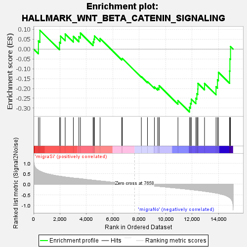
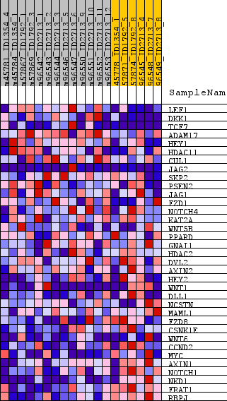
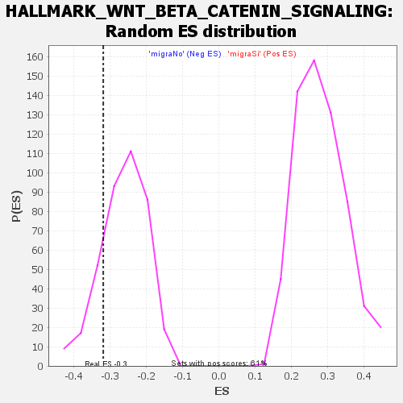

| Dataset | normalized_counts_collapsed_to_symbols.phenotype_labels.cls #migraSi_versus_migraNo.phenotype_labels.cls #migraSi_versus_migraNo_repos |
| Phenotype | phenotype_labels.cls#migraSi_versus_migraNo_repos |
| Upregulated in class | migraNo |
| GeneSet | HALLMARK_WNT_BETA_CATENIN_SIGNALING |
| Enrichment Score (ES) | -0.31961182 |
| Normalized Enrichment Score (NES) | -1.2113684 |
| Nominal p-value | 0.18863049 |
| FDR q-value | 0.36881626 |
| FWER p-Value | 0.862 |

| SYMBOL | TITLE | RANK IN GENE LIST | RANK METRIC SCORE | RUNNING ES | CORE ENRICHMENT | |
|---|---|---|---|---|---|---|
| 1 | LEF1 | lymphoid enhancer binding factor 1 [Source:HGNC Symbol;Acc:HGNC:6551] | 366 | 0.663 | 0.0412 | No |
| 2 | DKK1 | dickkopf WNT signaling pathway inhibitor 1 [Source:HGNC Symbol;Acc:HGNC:2891] | 477 | 0.621 | 0.0952 | No |
| 3 | TCF7 | transcription factor 7 [Source:HGNC Symbol;Acc:HGNC:11639] | 1966 | 0.380 | 0.0340 | No |
| 4 | ADAM17 | ADAM metallopeptidase domain 17 [Source:HGNC Symbol;Acc:HGNC:195] | 2043 | 0.374 | 0.0658 | No |
| 5 | HEY1 | hes related family bHLH transcription factor with YRPW motif 1 [Source:HGNC Symbol;Acc:HGNC:4880] | 2394 | 0.341 | 0.0763 | No |
| 6 | HDAC11 | histone deacetylase 11 [Source:HGNC Symbol;Acc:HGNC:19086] | 3011 | 0.293 | 0.0643 | No |
| 7 | CUL1 | cullin 1 [Source:HGNC Symbol;Acc:HGNC:2551] | 3430 | 0.269 | 0.0631 | No |
| 8 | JAG2 | jagged canonical Notch ligand 2 [Source:HGNC Symbol;Acc:HGNC:6189] | 3547 | 0.261 | 0.0812 | No |
| 9 | SKP2 | S-phase kinase associated protein 2 [Source:HGNC Symbol;Acc:HGNC:10901] | 4506 | 0.191 | 0.0365 | No |
| 10 | PSEN2 | presenilin 2 [Source:HGNC Symbol;Acc:HGNC:9509] | 4569 | 0.186 | 0.0507 | No |
| 11 | JAG1 | jagged canonical Notch ligand 1 [Source:HGNC Symbol;Acc:HGNC:6188] | 4609 | 0.184 | 0.0663 | No |
| 12 | FZD1 | frizzled class receptor 1 [Source:HGNC Symbol;Acc:HGNC:4038] | 5037 | 0.157 | 0.0535 | No |
| 13 | NOTCH4 | notch receptor 4 [Source:HGNC Symbol;Acc:HGNC:7884] | 6682 | 0.054 | -0.0502 | No |
| 14 | KAT2A | lysine acetyltransferase 2A [Source:HGNC Symbol;Acc:HGNC:4201] | 6718 | 0.052 | -0.0474 | No |
| 15 | WNT5B | Wnt family member 5B [Source:HGNC Symbol;Acc:HGNC:16265] | 8162 | -0.029 | -0.1403 | No |
| 16 | PPARD | peroxisome proliferator activated receptor delta [Source:HGNC Symbol;Acc:HGNC:9235] | 8625 | -0.055 | -0.1655 | No |
| 17 | GNAI1 | G protein subunit alpha i1 [Source:HGNC Symbol;Acc:HGNC:4384] | 9151 | -0.084 | -0.1921 | No |
| 18 | HDAC2 | histone deacetylase 2 [Source:HGNC Symbol;Acc:HGNC:4853] | 9393 | -0.098 | -0.1985 | No |
| 19 | DVL2 | dishevelled segment polarity protein 2 [Source:HGNC Symbol;Acc:HGNC:3086] | 9502 | -0.103 | -0.1955 | No |
| 20 | AXIN2 | axin 2 [Source:HGNC Symbol;Acc:HGNC:904] | 9505 | -0.103 | -0.1854 | No |
| 21 | HEY2 | hes related family bHLH transcription factor with YRPW motif 2 [Source:HGNC Symbol;Acc:HGNC:4881] | 10933 | -0.189 | -0.2614 | No |
| 22 | WNT1 | Wnt family member 1 [Source:HGNC Symbol;Acc:HGNC:12774] | 11811 | -0.246 | -0.2954 | Yes |
| 23 | DLL1 | delta like canonical Notch ligand 1 [Source:HGNC Symbol;Acc:HGNC:2908] | 11886 | -0.250 | -0.2756 | Yes |
| 24 | NCSTN | nicastrin [Source:HGNC Symbol;Acc:HGNC:17091] | 11948 | -0.255 | -0.2544 | Yes |
| 25 | MAML1 | mastermind like transcriptional coactivator 1 [Source:HGNC Symbol;Acc:HGNC:13632] | 12292 | -0.279 | -0.2497 | Yes |
| 26 | FZD8 | frizzled class receptor 8 [Source:HGNC Symbol;Acc:HGNC:4046] | 12367 | -0.284 | -0.2265 | Yes |
| 27 | CSNK1E | casein kinase 1 epsilon [Source:HGNC Symbol;Acc:HGNC:2453] | 12436 | -0.290 | -0.2024 | Yes |
| 28 | WNT6 | Wnt family member 6 [Source:HGNC Symbol;Acc:HGNC:12785] | 12449 | -0.291 | -0.1745 | Yes |
| 29 | CCND2 | cyclin D2 [Source:HGNC Symbol;Acc:HGNC:1583] | 12946 | -0.333 | -0.1746 | Yes |
| 30 | MYC | MYC proto-oncogene, bHLH transcription factor [Source:HGNC Symbol;Acc:HGNC:7553] | 13817 | -0.417 | -0.1911 | Yes |
| 31 | AXIN1 | axin 1 [Source:HGNC Symbol;Acc:HGNC:903] | 13926 | -0.428 | -0.1560 | Yes |
| 32 | NOTCH1 | notch receptor 1 [Source:HGNC Symbol;Acc:HGNC:7881] | 14000 | -0.437 | -0.1178 | Yes |
| 33 | NKD1 | NKD inhibitor of WNT signaling pathway 1 [Source:HGNC Symbol;Acc:HGNC:17045] | 14848 | -0.633 | -0.1115 | Yes |
| 34 | FRAT1 | FRAT regulator of WNT signaling pathway 1 [Source:HGNC Symbol;Acc:HGNC:3944] | 14869 | -0.638 | -0.0499 | Yes |
| 35 | RBPJ | recombination signal binding protein for immunoglobulin kappa J region [Source:HGNC Symbol;Acc:HGNC:5724] | 14915 | -0.666 | 0.0129 | Yes |

